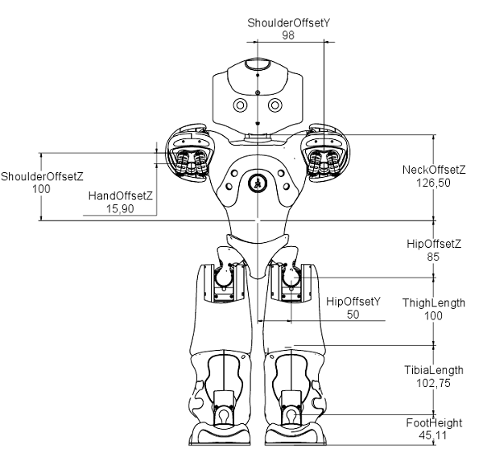
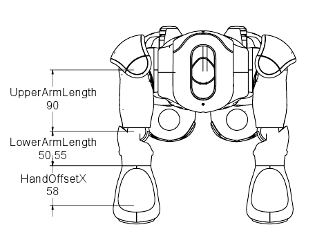
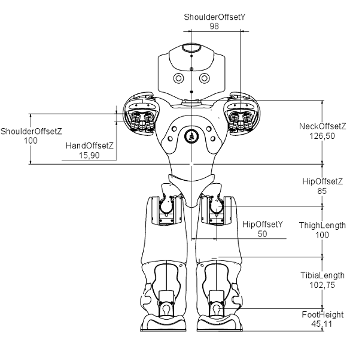
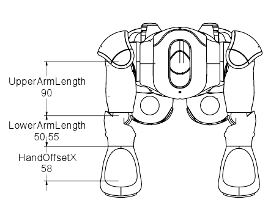

Links V3.2¶
NAO Hardware | Product range | Motors & Kinematics | Components & Sensors | Optional devices
Motors & Kinematics | Links V3.2 | Joints V3.2 | Masses V3.2
 



| Name | X (mm) | Y (mm) | Z (mm) |
| Torso to HeadYaw | 0.00 | 0.00 | 126.50 |
| HeadYaw to HeadPitch | 0.00 | 0.00 | 0.00 |
| Torso to LShoulderPitch | 0.00 | 98.00 | 100.00 |
| LShoulderPitch to LShoulderRoll | 0.00 | 0.00 | 0.00 |
| LShoulderRoll to LElbowYaw | 90.00 | 0.00 | 0.00 |
| LElbowYaw to LElbowRoll | 0.00 | 0.00 | 0.00 |
| LElbowRoll to LWristYaw | 50.55 | 0.00 | 0.00 |
| Torso to LHipYawPitch | 0.00 | 50.00 | -85.00 |
| LHipYawPitch to LHipRoll | 0.00 | 0.00 | 0.00 |
| LHipRoll to LHipPitch | 0.00 | 0.00 | 0.00 |
| LHipPitch to LKneePitch | 0.00 | 0.00 | -100.00 |
| LKneePitch to LAnklePitch | 0.00 | 0.00 | -102.75 |
| LAnklePitch to LAnkleRoll | 0.00 | 0.00 | 0.00 |
| Name | Length (mm) |
|---|---|
| NeckOffsetZ | 126.50 |
| ShoulderOffsetY | 98.00 |
| UpperArmLength | 90.00 |
| LowerArmLength | 50.55 |
| ShoulderOffsetZ | 100.00 |
| HandOffsetX | 58.00 |
| HipOffsetZ | 85.00 |
| HipOffsetY | 50.00 |
| ThighLength | 100.00 |
| TibiaLength | 102.74 |
| FootHeight | 45.11 |
| HandOffsetZ | 15.90 |